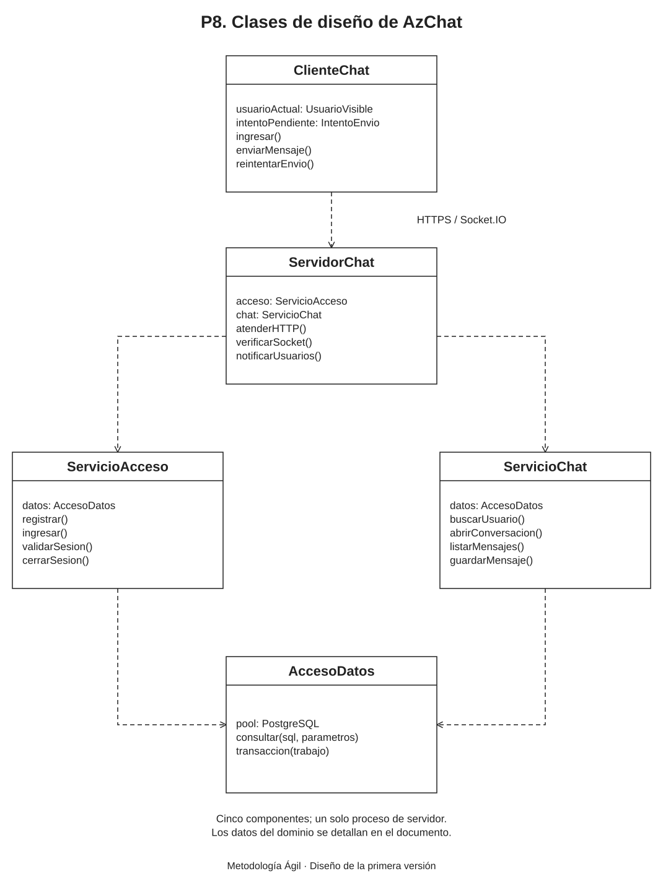

Propósito y criterio de sencillez
El diseño transforma los conceptos de P6 en cinco componentes pequeños. La web utiliza HTML, CSS y JavaScript; un único proceso Node.js atiende las peticiones y las conexiones en directo. PostgreSQL conserva los datos.
Las clases del diagrama expresan responsabilidades. En la construcción pueden organizarse como módulos y funciones JavaScript, sin obligar a usar herencia ni una estructura de clases extensa.
Diagrama de clases de diseño

Modelo editable: Clases_diseno_AzChat.drawio. Puede abrirse en Draw.io mediante Archivo → Abrir desde → Dispositivo.
Componentes y archivos previstos
| Componente | Responsabilidad |
|---|---|
| ClienteChat | source/publico/app.js. Controla registro, ingreso, búsqueda y lectura del chat. Conserva el intento pendiente y su identificador. Envía peticiones HTTPS y recibe actualizaciones de Socket.IO. Cada mensaje se inserta o actualiza por su identificador para no repetirlo. |
| ServidorChat | source/servidor.js. Entrega la web, recibe las peticiones y comparte el acceso de sesión con Socket.IO. Llama a los servicios de acceso y chat y publica mensajes ya conservados a los participantes autorizados. |
| ServicioAcceso | source/acceso.js. Valida el registro y los identificadores únicos, calcula y verifica el hash de contraseña y administra el acceso. Utiliza argon2, express-session y el almacenamiento de sesiones en PostgreSQL. |
| ServicioChat | source/chat.js. Busca usuarios exactos, abre el único chat de cada pareja y consulta sus mensajes. Comprueba la participación antes de leer o guardar. Reconoce los reintentos y devuelve el mismo mensaje si ya fue conservado. |
| AccesoDatos | source/datos.js. Mantiene un grupo pequeño de conexiones PostgreSQL y ejecuta consultas con parámetros y transacciones. Se comparte con el almacenamiento de sesiones. El navegador no utiliza este componente ni recibe su contraseña de conexión. |
Las rutas anteriores son una organización prevista para la construcción. El alcance de estos documentos corresponde al diseño; no presenta esos módulos como implementados.
Datos que intercambian los componentes
| Estructura | Información y uso |
|---|---|
| Estudiante | id, nombreCompleto, codigoEstudiante, nombreUsuario y hashContrasena. Es información del servidor. Las respuestas de búsqueda entregan solo un identificador técnico y el nombre de usuario. |
| ConversacionPrivada | id, los identificadores de sus dos estudiantes y fechaCreacion. La pareja se ordena siempre de la misma forma para reconocer que A–B y B–A son el mismo chat. |
| Mensaje | id secuencial asignado por la base, conversacionId, emisorId, idEnvio, texto y fechaHora. El servidor decide el emisor y la fecha. idEnvio identifica el intento del navegador y se conserva al reintentar. |
| Sesión técnica | La biblioteca de sesiones conserva el identificador del estudiante y una fecha de vencimiento absoluta de 8 horas desde el ingreso. No añade otro actor ni otra entidad del dominio de P6. Su registro técnico se concretará en P11. |
El esquema de tablas, sus tipos SQL y sus relaciones se detallarán en P11. Los identificadores de los mensajes proporcionan un orden estable; el navegador muestra las filas en ese orden y evita duplicarlas.
Interfaz mínima del servidor
| Función | Interfaz prevista |
|---|---|
| Registro y acceso | POST /api/registro crea la cuenta. POST /api/sesion verifica usuario o código y contraseña. GET /api/sesion consulta el acceso actual. DELETE /api/sesion lo termina. |
| Búsqueda | GET /api/usuarios?nombre=... busca el usuario completo, normalizado a minúsculas. Requiere sesión y devuelve solo la identidad visible necesaria para iniciar el chat. |
| Conversaciones | GET /api/conversaciones lista los chats propios. POST /api/conversaciones recibe el destinatario y devuelve el chat existente o crea el de esa pareja. |
| Historial | GET /api/conversaciones/:id/mensajes obtiene los últimos 50 mensajes. Un cursor basado en el identificador permite solicitar los anteriores. La paginación limita cada consulta, no la conservación del historial. |
| Envío | POST /api/conversaciones/:id/mensajes recibe idEnvio y texto. El servidor comprueba la sesión y el chat. Un envío nuevo devuelve el mensaje guardado; un reintento válido devuelve el mismo registro. Reutilizar el intento con otro texto o chat se rechaza como conflicto. |
| Actualización en directo | Socket.IO emite mensaje:nuevo con datos de un mensaje ya guardado. El servidor asigna las conexiones a canales internos de usuario y sesión; el navegador no elige canales de otras cuentas. Al reconectar se vuelve a verificar el acceso y se consulta el historial. |
Reglas del acceso y los envíos
- La contraseña se protege con Argon2id mediante una biblioteca de hash; no se implementa un algoritmo propio ni se entrega el hash al navegador.
- La sesión vence a las 8 horas desde el ingreso, sin ampliar ese plazo por actividad. Antes de acceder al chat se comprueba también ese vencimiento.
- La cookie contiene únicamente un identificador de sesión firmado. En la nube se configura con
HttpOnly,SecureySameSite=Lax. - El identificador de sesión se renueva al ingresar. Al salir se invalida su registro, se elimina la cookie y se desconectan las actualizaciones de esa sesión. Al vencer también se cierra su canal en directo.
- El servicio toma el emisor de la sesión y valida pertenencia, contenido e identidad del intento antes de guardar.
- El intento utiliza un UUID generado por el navegador y se reutiliza únicamente para el mismo texto y chat. La base impide dos registros con la misma pareja emisor–intento.
- La confirmación y la notificación se producen después de guardar. Una respuesta o evento repetido actualiza el mensaje existente en la interfaz.
- Los mensajes se envían por HTTPS, sin cola automática fuera de línea. La reconexión de Socket.IO recupera el canal y consulta el historial; no reintenta los envíos fallidos.
Referencias técnicas
- Sesiones de Express y almacenamiento de sesiones en PostgreSQL.
- Biblioteca Argon2 para Node.js.
- Middleware de Socket.IO y comportamiento fuera de línea.
Equipo del proyecto
| Apellidos y nombres | Código |
|---|---|
| Apaza Quispe Antonio Vicente | 236876 |
| Arias Ramirez Alex | 236104 |
| Chura Chambilla Raul Cristian | 236567 |
| Escobedo Arapa Kenyi Blanca | 236171 |
| Mamani Pari Yimmy Jonathan | 237317 |
| Quispe Ramos Daniel Jhosimar | 236568 |
| Roque Mamani Vidman Ruis | 236232 |
| Vidal Fuentes Jordy Anthony | 236535 |